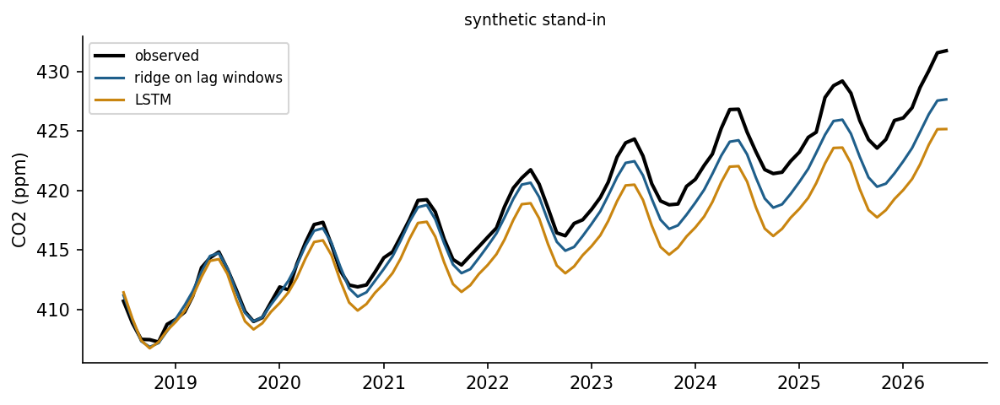

Time series in engineering
A time series is a sequence of measurements indexed by time. Its behaviour usually combines a trend, a slow change of level; seasonality, a pattern that repeats with a fixed period such as a day or a year; cycles without a fixed period; and irregular noise. Neighbouring values are correlated, which is the property forecasting exploits and the property that breaks the independence assumption of the random splits used in Weeks 7 and 8. Box and Jenkins built a systematic methodology on autocorrelation and differencing [1], and Hyndman and Athanasopoulos give a modern, practical account of forecasting with open examples [2].
The Keeling curve is a textbook series. Continuous measurements at Mauna Loa since 1958 show the carbon dioxide concentration rising every year, with an annual cycle of a few parts per million caused by the growth and decay of vegetation in the northern hemisphere [3, 4]. The rise itself accelerates, so a straight line underestimates the future.
Check your understanding. Why must the test set of a forecasting problem lie after the training period?
Baselines and honest evaluation
Every forecasting study needs baselines. The naive forecast repeats the last observation, and the seasonal naive forecast repeats the value from one season earlier, for example the same month of the previous year [2]. A sophisticated model that cannot beat them has learned nothing useful. Evaluation must respect time: The model is trained on data up to a forecast origin and tested on the following horizon. Rolling-origin evaluation repeats this for several origins and averages the errors, which gives a more reliable picture than a single split. Errors grow with the horizon, so results should be reported per horizon or for the horizon that matters for the decision, such as one day ahead for unit commitment in a power system [5].
Animation: From a series to training examples
A window of past values forms the input and the next values form the target. Sliding the window through the training period creates the examples on which a model is trained. Change the window and horizon lengths.
Regression models for time series
Linear regression becomes a forecasting model when its inputs describe time. A polynomial trend captures slow change, and pairs of sine and cosine terms with the seasonal period, called Fourier terms, capture a smooth seasonal pattern with few parameters. Lagged values of the series itself, the value one month ago or twelve months ago, turn forecasting into ordinary supervised learning, so that ridge regression, random forests or gradient boosting can be used. For horizons longer than one step, the model is applied recursively, feeding its own forecasts back as lags, or a separate model is trained for each horizon. Exponential smoothing and ARIMA models are classical alternatives with well understood behaviour and prediction intervals [1, 2].
Check your understanding. A monthly series has a yearly cycle. Which pair of features represents the first harmonic of the season?
Recurrent neural networks
A recurrent network processes a sequence one step at a time and carries a hidden state from step to step, so that it can summarise the past in a fixed-size vector [6]. Training by backpropagation through time suffers from vanishing and exploding gradients, which makes long-range dependencies hard to learn [7]. The long short-term memory cell adds a memory cell and three gates, input, forget and output, that control what is written, kept and read; its design lets information and gradients flow across many steps [8]. The gated recurrent unit is a simpler relative [9]. Convolutional networks over time and attention-based transformers are strong alternatives for sequence modelling [10, 11], and surveys compare these families for forecasting [12].
Deep sequence models need data. A monthly series of about eight hundred values is small for an LSTM, and a well-designed regression with seasonal terms is often as accurate. Recurrent networks show their strength with many related series, such as the load of thousands of feeders, and with long high-frequency records, such as the degradation trajectories of turbofan engines in the C-MAPSS simulation data used for remaining useful life prediction [13].
Check your understanding. What problem does the gating of an LSTM address?
Forecasts for decisions
A forecast serves a decision: scheduling generation, sizing a reservoir release, ordering spare parts, or setting emission targets. Point forecasts should therefore come with uncertainty, as prediction intervals or quantiles, and probabilistic forecasting competitions in energy have made this standard practice [5]. The forecast horizon, the update frequency and the cost of errors in each direction belong in the problem statement, as the costs of misses and false alarms did in Week 8.

Python step 12: Time-indexed data, baselines and exceptions
The Python step of this week is part of the Colab notebook, where every explanation stands next to a cell that runs it and the step closes with a quick check and exercises with immediate feedback. The printable lecture notes contain the same step together with the outputs of its code.
Review cards
Select a card to turn it over.
Continue the week
The week continues with the simulation and the self-assessment of the interactive lab and with the Python step and the hands-on work of the Colab notebook. The week overview lists the discipline challenges, the weekly task and the research assignment.
Interactive lab Colab notebook Self-assessment Week overview and tasks
References
[1] Box, G. E. P., Jenkins, G. M., Reinsel, G. C., & Ljung, G. M. (2015). Time Series Analysis: Forecasting and Control (5th ed.). Wiley.
[2] Hyndman, R. J., & Athanasopoulos, G. (2021). Forecasting: Principles and Practice (3rd ed.). OTexts. https://otexts.com/fpp3/
[3] Keeling, C. D., Bacastow, R. B., Bainbridge, A. E., Ekdahl, C. A., Guenther, P. R., Waterman, L. S., & Chin, J. F. S. (1976). Atmospheric carbon dioxide variations at Mauna Loa Observatory, Hawaii. Tellus, 28(6), 538-551. https://doi.org/10.1111/j.2153-3490.1976.tb00701.x
[4] Lan, X., & Keeling, R. (2026). Trends in atmospheric carbon dioxide: Mauna Loa CO2 monthly mean data. NOAA Global Monitoring Laboratory and Scripps Institution of Oceanography. https://gml.noaa.gov/ccgg/trends/
[5] Hong, T., Pinson, P., Fan, S., Zareipour, H., Troccoli, A., & Hyndman, R. J. (2016). Probabilistic energy forecasting: Global Energy Forecasting Competition 2014 and beyond. International Journal of Forecasting, 32(3), 896-913. https://doi.org/10.1016/j.ijforecast.2016.02.001
[6] Elman, J. L. (1990). Finding structure in time. Cognitive Science, 14(2), 179-211. https://doi.org/10.1207/s15516709cog1402_1
[7] Bengio, Y., Simard, P., & Frasconi, P. (1994). Learning long-term dependencies with gradient descent is difficult. IEEE Transactions on Neural Networks, 5(2), 157-166. https://doi.org/10.1109/72.279181
[8] Hochreiter, S., & Schmidhuber, J. (1997). Long short-term memory. Neural Computation, 9(8), 1735-1780. https://doi.org/10.1162/neco.1997.9.8.1735
[9] Cho, K., van Merriënboer, B., Gulcehre, C., et al. (2014). Learning phrase representations using RNN encoder-decoder for statistical machine translation. In Proceedings of the 2014 Conference on Empirical Methods in Natural Language Processing (EMNLP) (pp. 1724-1734). https://doi.org/10.3115/v1/D14-1179
[10] Bai, S., Kolter, J. Z., & Koltun, V. (2018). An empirical evaluation of generic convolutional and recurrent networks for sequence modeling. arXiv preprint arXiv:1803.01271. https://arxiv.org/abs/1803.01271
[11] Vaswani, A., Shazeer, N., Parmar, N., Uszkoreit, J., Jones, L., Gomez, A. N., Kaiser, Ł., & Polosukhin, I. (2017). Attention is all you need. In Advances in Neural Information Processing Systems 30 (pp. 5998-6008). https://arxiv.org/abs/1706.03762
[12] Lim, B., & Zohren, S. (2021). Time-series forecasting with deep learning: A survey. Philosophical Transactions of the Royal Society A, 379(2194), 20200209. https://doi.org/10.1098/rsta.2020.0209
[13] Saxena, A., Goebel, K., Simon, D., & Eklund, N. (2008). Damage propagation modeling for aircraft engine run-to-failure simulation. In 2008 International Conference on Prognostics and Health Management (pp. 1-9). IEEE. https://doi.org/10.1109/PHM.2008.4711414